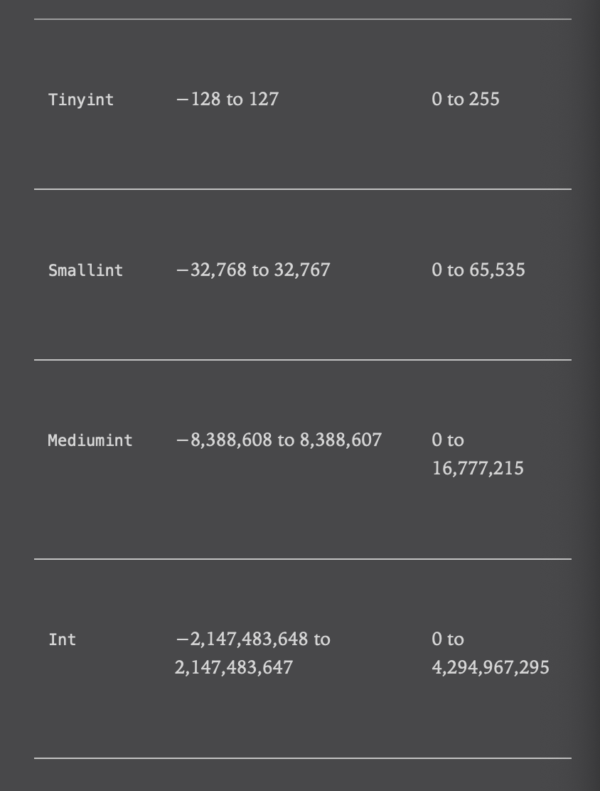

This my first note to SQL
Numeric data
There are actually several different numeric data types that reflect the various ways in which numbers are used
Bool value : Boolean, would contain a 0 to indicate false and a 1 to indicate true
Primary key : A system-generated key for transaction table. Would start at 1 and increase in increments of one.
Integer value
Float : High-precision scientific or manufacturing data ofen requires to eight decimal points

Float(p,s) or Double(p,s) using p digit precision on both left and right the decimal point, s indicating scale : the number of digits on the right the decimal point
Remember that the system will generate error if you are trying to store for example 178.375 in your Float(4,2). Instead of truncating left digits - a mistake we dont want to make
Temporal Data
| Type | Format | Example |
|---|---|---|
| Date | YYYY-MM-DD | 2020-04-19 |
| Datetime | YYYY-MM-DD HH:MI:SS | 2020-04-19 12:03:20.000001 |
| Timestamp | YYYY-MM-DD HH:MI:SS | 2038:01-18 22:14:07.999999 |
| Year | YYYY | 1901 to 2155 |
| Time | HHH:MI:SS | -838:59:59.000000 to 838:59:59:000000 |
The Datetime, Timestamp and Time types also allow fractional seconds of up to 6 decimals places
For each situation we have to use different type when refer to time
- Columns to hold the expected future shipping date of a customer order and an emplyee’s birth rate would use the
datetype, since it is unnecessary to know at what time a person was born and unrealistic to schedule a future shpment down to the second - A column to hold information about when a customer order was actually shpped would use the
datetimetype, since it is important to track not only the date that the shipment occurred but the time as weel - A column that tracks when a user last modified a particular row in a table would use the
timestamptype. Thetimestamptype holds the information asdatetimetype, but atimestampcolumn will automatically be populated with the current date/time by MySQL server when a row is added to a table or when a row is later modified - Columns that hold data regarding the length of time needed to complete a task would use the
timetype. For this type of data, it would be unnecessary and confusing to store a date component
Table creation
An example data schemma will be using in MySQL server
| Column | Type | Example |
| ———————- | —————— | ————— |
| Name | Varchar(40) | |
| Eye_color | Char(2) | BL, BR, GR |
| Birth_date | Date | |
| Address | Varchar(100) | |
| Favourite_foods | Varchar(200) | |
Normalize version needs add an id
| Column | Type | Example |
| —————- | ————————— | ———- |
| Person_id | Smallint(unsigned) | |
| Street | Varchar(30) | |
| City | Varchar(20) | |
| State | Varchar(20) | |
| Country | Varchar(20) | |
| Postal_code | Varchar(20) | |1
2
3
4
5
6
7
8
9
10
11
12
13CREATE TABLE person(
person_id SMALLINT UNSIGNED,
fname VARCHAR(20),
lname VARCHAR(20),
eye_color CHAR(20),
birth_date DATE,
street VARCHAR(30),
city VARCHAR(30),
state VARCHAR(20),
country VARCHAR(20),
postal_code VARCHAR(20),
CONSTRAINT pk_person PRIMARY KEY(person_id)
);
1 | eye_color CHAR(20) CHECK (eye_color IN ('BR', 'BL', 'GR')) |
Most of SQL server will enforce the above check when inserting new data point but MySQL does not. But we can write it different
1 | eye_color ENUM('BR','BL','GR') |
Auto generate a default PRIMARY KEY by auto increment
We can add this by ALTER command and modify the column definition1
2ALTER TABLE person MODIFY person_id
SMALLINT UNSIGNED AUTO_INCREMENT;